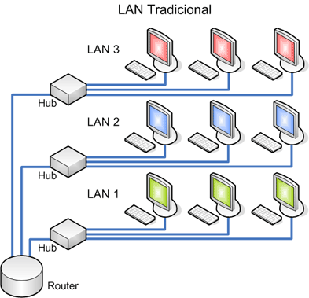

¿Que es una Red LAN?
29 de febrero 2024 por Perla Edelmira Ucles MoncadaUna red de área local (LAN) es una red contenida dentro de una pequeña zona geográfica, normalmente dentro del mismo edificio. Las redes WiFi domésticas y las redes de pequeñas empresas son algunos ejemplos comunes de LAN.
Se conoce como red LAN (siglas del inglés: Local Área Network, que traduce Red de Área Local) a una red informática cuyo alcance se limita a un espacio físico reducido, como una casa, un departamento o a lo sumo un edificio.
Las LAN también pueden ser bastante grandes, aunque si ocupan varios edificios, a menudo es más preciso clasificarlas como redes de área extensa (WAN) o redes de área metropolitana (MAN).
¿Cómo funcionan las LAN?
La mayoría de las LAN se conectan a Internet en un punto central: un enrutador. Las LAN domésticas suelen utilizar un único enrutador, mientras que las LAN en espacios más grandes pueden utilizar además conmutadores de red para una entrega de paquetes más eficiente.
Las redes LAN casi siempre utilizan Ethernet, WiFi o ambas para conectar los dispositivos de la red. Ethernet es un protocolo de conexión física a la red que requiere el uso de cables Ethernet. WiFi es un protocolo para conectarse a una red mediante ondas de radio.
Una variedad de dispositivos puede conectarse a las LAN, incluyendo servidores, ordenadores de escritorio, portátiles, impresoras, dispositivos IoT e incluso videoconsolas. En las oficinas, las LAN suelen utilizarse para proporcionar acceso compartido a los empleados internos a las impresoras o servidores conectados.¿Qué equipo se necesita para configurar una LAN?
Las redes LAN más sencillas conectadas a Internet solo necesitan un enrutador y una forma en la que los dispositivos informáticos se conecten al enrutador, como por ejemplo mediante cables Ethernet o un punto de acceso WiFi. Las LAN sin conexión a Internet necesitan un conmutador para intercambiar datos. Las LAN grandes, como las de un gran edificio de oficinas, pueden necesitar enrutadores o conmutadores adicionales para reenviar los datos de forma más eficiente a los dispositivos adecuados.
No todas las LAN se conectan a Internet. De hecho, las LAN son anteriores a Internet: las primeras LAN se utilizaron en empresas a finales de la década de 1970. (Estas antiguas LAN utilizaban protocolos de red que ya no se usan en la actualidad). El único requisito para configurar una LAN es que los dispositivos conectados puedan intercambiar datos. Para ello suele ser necesario un equipo de red para la conmutación de paquetes, como un conmutador de red. En la actualidad, incluso las LAN que no están conectadas a Internet utilizan los mismos protocolos de red que se usan en Internet (como IP).